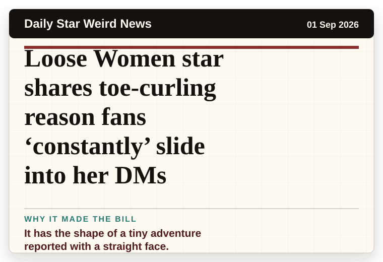
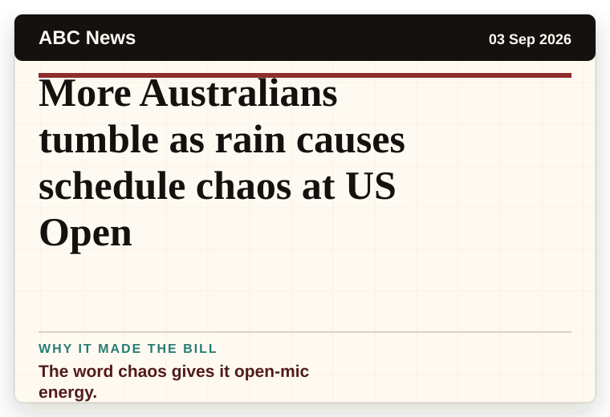
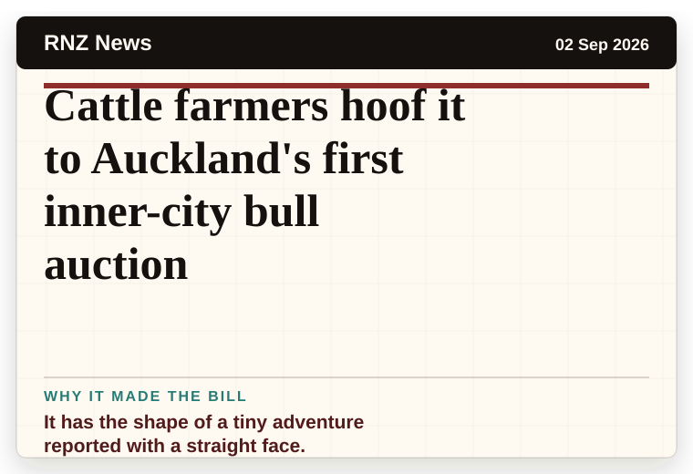

Daily Star Weird News
United Kingdom
Daily Star's space mission is 'expected' to find aliens on Jupiter and change the world
A wonderfully specific detail has taken centre stage.
The latest daily picks, linked back to the original sources. Search the room, pick a source, or follow a headline out to the full story.
Record updated: 03 Sep 2026, 07:38 AM AEST
Showing 13 headline candidates from the refresh run completed on 03 Sep 2026, 07:38 AM AEST.
A wonderfully specific detail has taken centre stage.

A wonderfully specific detail has taken centre stage.

A very ordinary object has wandered into serious news.

The scale is doing deadpan comedy.

The scale is doing deadpan comedy.

It has the shape of a tiny adventure reported with a straight face.

It has the shape of a tiny adventure reported with a straight face.

It has the shape of a tiny adventure reported with a straight face.

A mystery is doing a lot of work in a very small sentence.

A mystery is doing a lot of work in a very small sentence.

The scale is doing deadpan comedy.

The word chaos gives it open-mic energy.

It has the shape of a tiny adventure reported with a straight face.